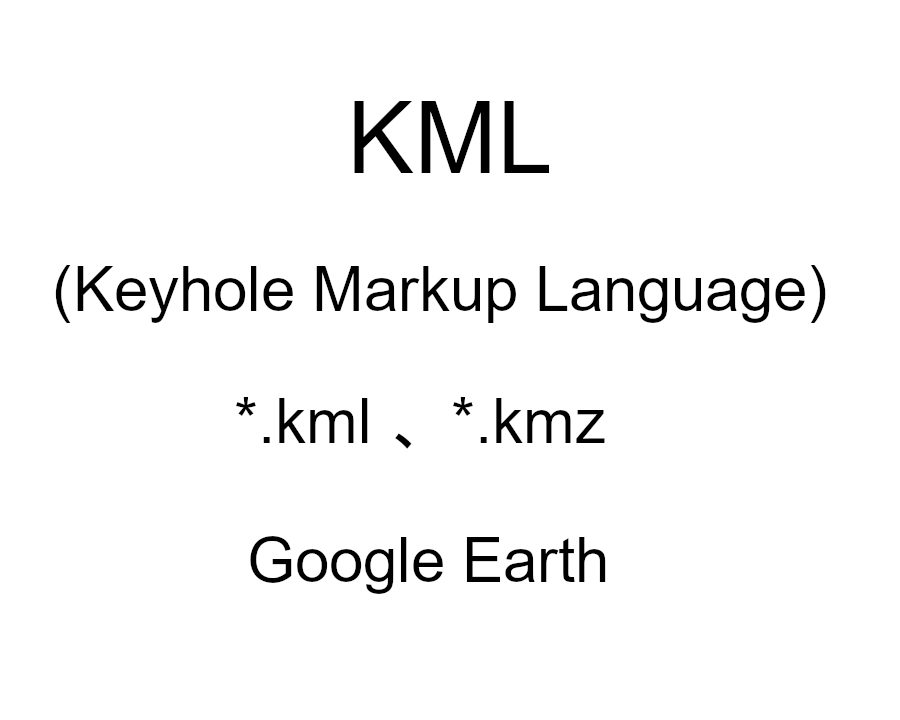

測量で得た地理空間情報を活用する
マークプラスは、測量するだけではなく、地理空間情報としてGISソフトで扱えるデータとして提供しています。
地理空間情報を積極的に活かしてみませんか？
自己紹介
令和５年１月２３日。
土地や建物の調査・測量だけでなく、GISの勉強についても発信していこうと思います。(勉強日記)
成果ファイル一覧
- KMLファイルをダウンロード
 GeoJsonファイルをダウンロード
GeoJsonファイルをダウンロード


測量で得た地理空間情報を活用する
マークプラスは、測量するだけではなく、地理空間情報としてGISソフトで扱えるデータとして提供しています。
地理空間情報を積極的に活かしてみませんか？
令和５年１月２３日。
土地や建物の調査・測量だけでなく、GISの勉強についても発信していこうと思います。(勉強日記)
GeoJsonファイルをダウンロード